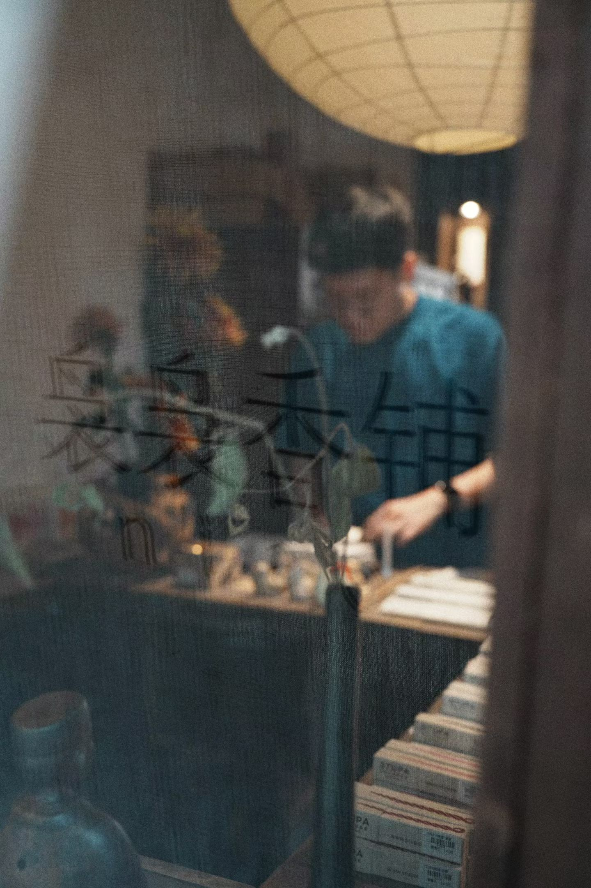

袅袅香铺
袅袅香铺是布里斯湾孵化的第一个子品牌。它不是一个"线香区域"，而是一个有独立入口、独立品牌名的店中店——日本、中国、尼泊尔、印度几十个品牌的线香集合。
"袅袅"是烟雾缭绕的样子——线香点燃后烟升起来的姿态。和布里斯湾的"湾"形成呼应：一个是有烟的地方，一个是有水的地方。
① 分装试香——最低2.8元一支，降低尝鲜门槛 ② 多品牌集合——不是单品牌专卖店 ③ 可点燃试闻——线上买香最大的痛点在线下被解决
30-50㎡·2人运营·线香+古美术组合。麓湖CPI是意向选址之一。核心验证点：脱离028C园区后，袅袅香铺能否独立吸引客流？
袅袅香铺 = 布里斯湾的第一个"毕业作品"。它验证的不只是一个品类能不能卖，是"模块化复制"这个战略能不能成立。
69